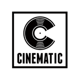

Music Industry Strategist · A&R · Artist Development & Creative Production
Profile —
Shane Guénin is a Montreal-based music industry professional working at the intersection of artist development, A&R, marketing, and creative production. With over a decade of experience across the music industry, he brings together creative vision, strategic partnerships, and commercial opportunities to help artists and producers build their careers.
As co-founder of , he has led artist development, marketing campaigns, visual production, and release strategies, working closely with recording artist CJ Flemings across music, media, and culture.
Currently —
A&R, Artist & Producer Management, and Music Marketing
Shane works across artist and producer development, music pitching, and campaign strategy. His work includes coordinating opportunities for producers through publishing relationships, developing creative briefs into targeted submissions, and supporting recording artists with release rollouts, audience development, and DSP strategy.
He has worked across the major digital streaming platform ecosystem, including , , and , helping connect music, marketing, and audience engagement.
Industry Experience & Partnerships —
Shane has collaborated across the music industry, building relationships with publishing companies, digital service providers, artists, producers, and creative partners.
Publishing & A&R: industry relationships with Publishing, , and .
Digital Music & Marketing: experience supporting artist campaigns, release strategies, and platform-focused initiatives across major DSPs.
Artist Development & Creative Production: co-founder of , leading marketing, visual campaigns, content production, and artist strategy for CJ Flemings.
Previous Experience:
artist development and A&R with
;
content marketing at
 Creative.
Creative.
Approach —
Combining industry relationships with creative execution and commercial thinking, Shane helps artists and producers navigate the music business, develop compelling campaigns, and identify opportunities for long-term growth.